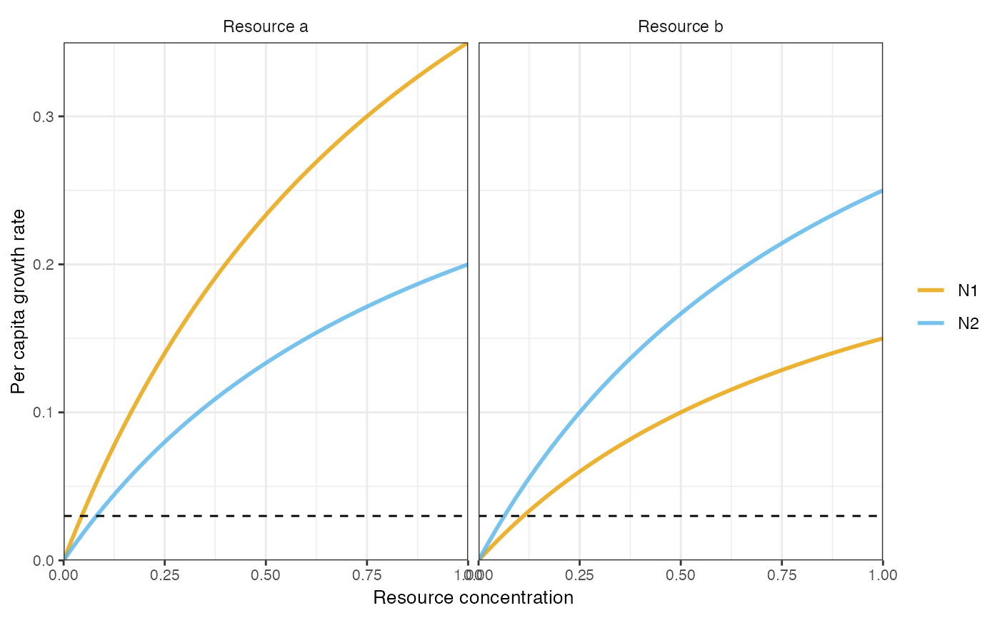
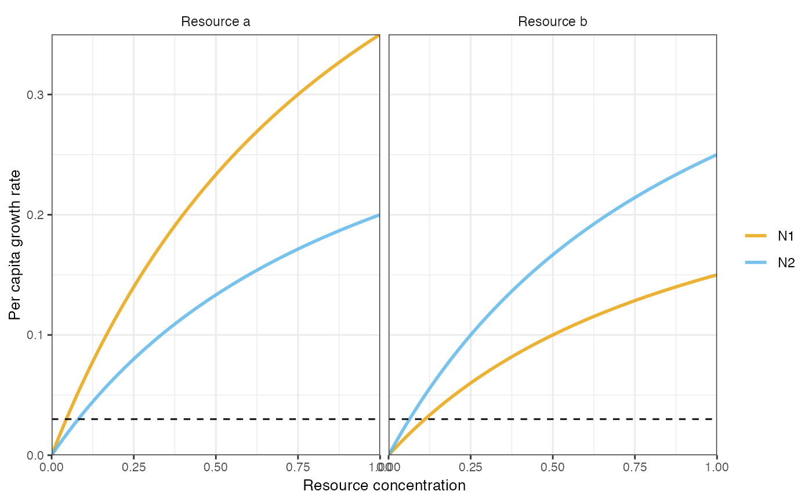

Plot functional responses
plot_funcresp(pars, maxx = 1, display_values, madj = FALSE)Arguments
- pars
S3 object of class
rescompdetailing model parameters and specifications.- maxx
Numeric vector of length 1. Resource value to calculate per-capita growth rates up to (xlim).
- display_values
Named list of vectors, with names matching names of pars$params. Each vector gives the values of the respective model parameters at which to plot the functional responses. Defaults are automatically inferred for most
rescomp_paramobjects, but may be overwritten.rescomp_param_customparameters must have their display values specified here if they were not defined at definition.- madj
Logical vector of length 1. Whether to standardise per capita growth rates by mortality.
Value
A ggplot object.
Details
It is assumed that the funcresp of pars is constructed such that the growth rate of a species on a given resource depends only on the concentration of that resource, and not on other resources.
This is the case for all built-in functional responses, but is not necessary the case if using funcresp_custom().
Plots are likely to be nonsensical or incorrect if this assumption is violated.
Examples
pars <- spec_rescomp()
plot_funcresp(pars)
 pars <- spec_rescomp(
spnum = 2,
resnum = 2,
funcresp = "type2",
mumatrix = list(matrix(
c(
0.7, 0.3,
0.4, 0.5
),
nrow = 2,
ncol = 2,
byrow = TRUE
))
)
#> Error in spec_rescomp(spnum = 2, resnum = 2, funcresp = "type2", mumatrix = list(matrix(c(0.7, 0.3, 0.4, 0.5), nrow = 2, ncol = 2, byrow = TRUE))): unused argument (mumatrix = list(matrix(c(0.7, 0.3, 0.4, 0.5), nrow = 2, ncol = 2, byrow = TRUE)))
plot_funcresp(pars)

plot_funcresp(pars, madj = TRUE)
pars <- spec_rescomp(
spnum = 2,
resnum = 2,
funcresp = "type2",
mumatrix = list(matrix(
c(
0.7, 0.3,
0.4, 0.5
),
nrow = 2,
ncol = 2,
byrow = TRUE
))
)
#> Error in spec_rescomp(spnum = 2, resnum = 2, funcresp = "type2", mumatrix = list(matrix(c(0.7, 0.3, 0.4, 0.5), nrow = 2, ncol = 2, byrow = TRUE))): unused argument (mumatrix = list(matrix(c(0.7, 0.3, 0.4, 0.5), nrow = 2, ncol = 2, byrow = TRUE)))
plot_funcresp(pars)

plot_funcresp(pars, madj = TRUE)
 # TODO: An example with display_values.
# TODO: An example with display_values.